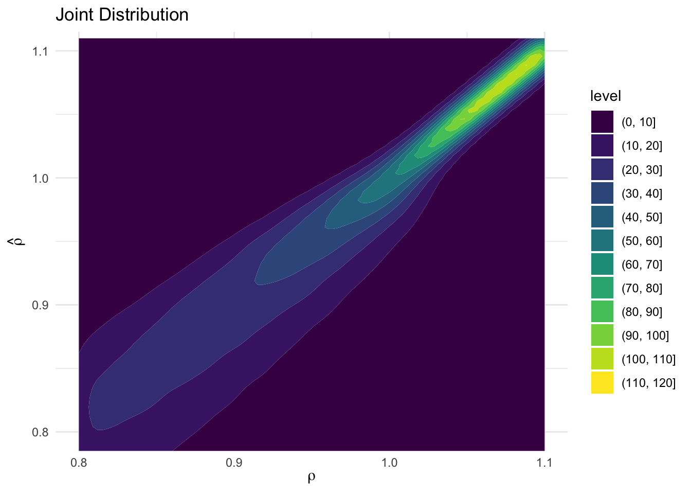
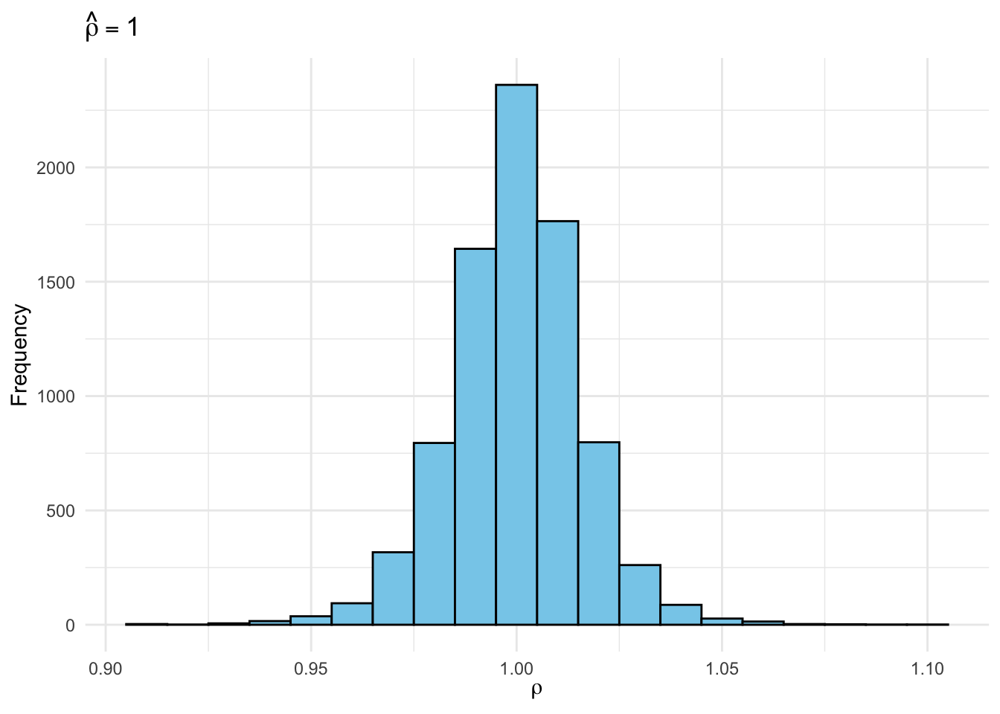
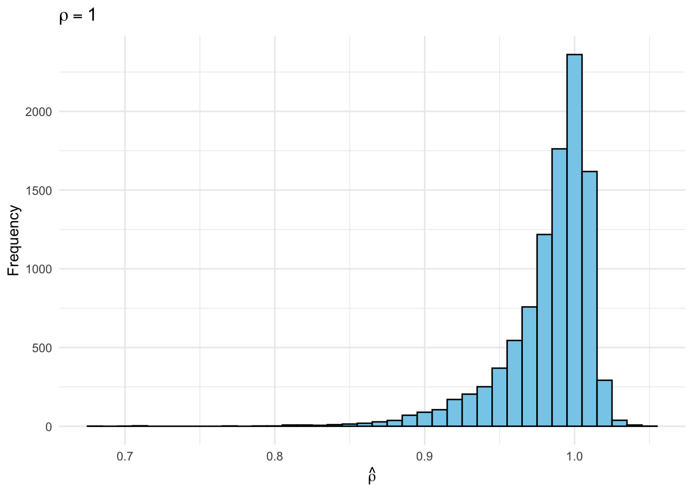
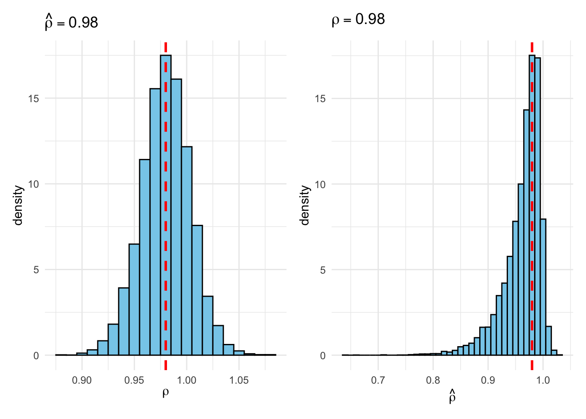
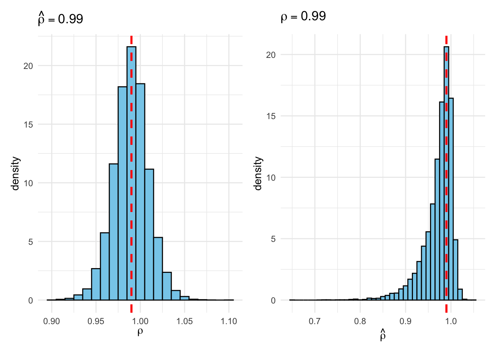
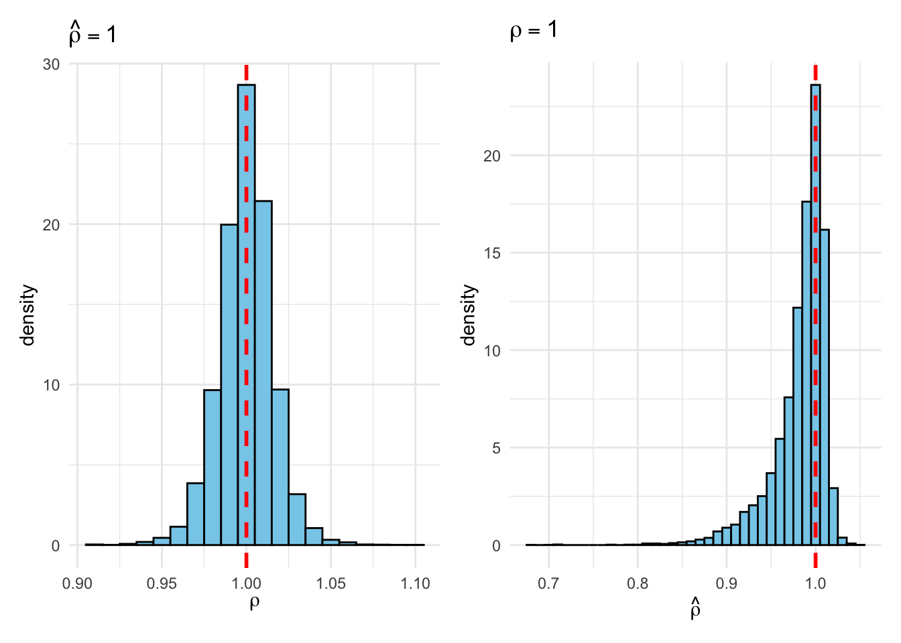
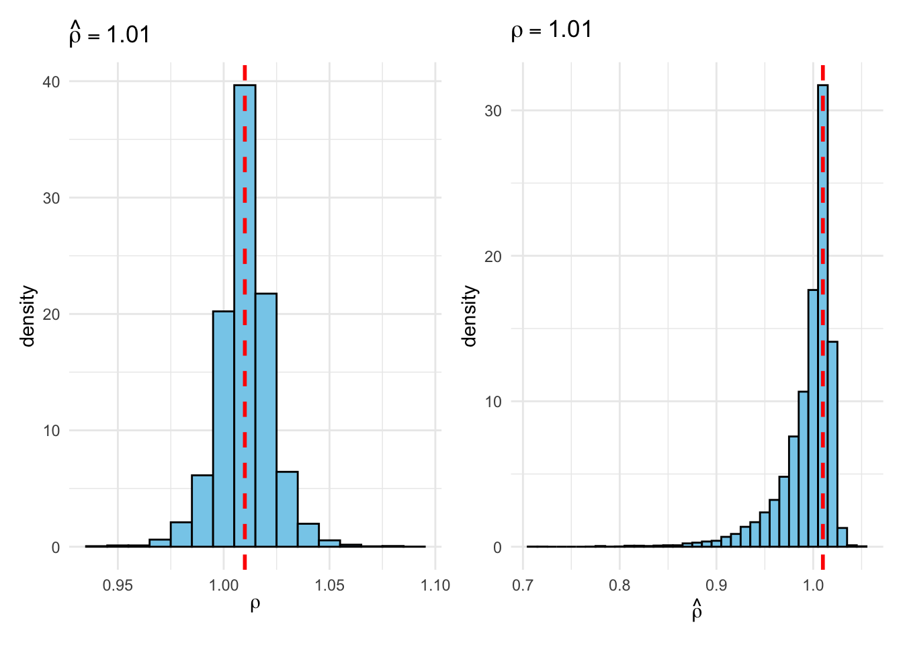
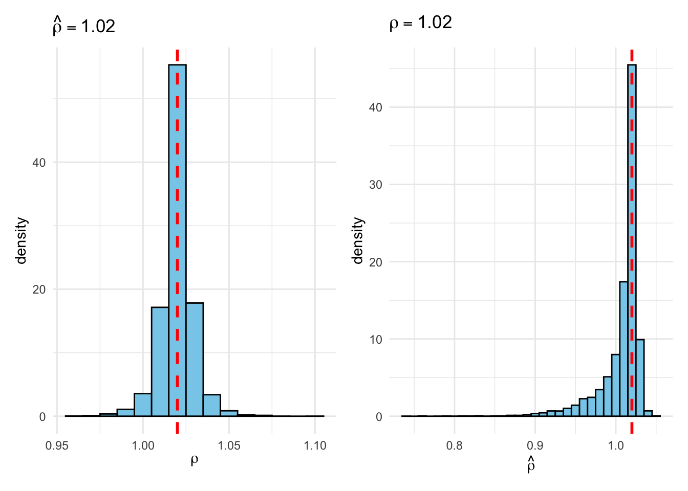

#-------------------------------------------------------------------------------
# Sims, C. A., & Uhlig, H. (1991). Understanding unit rooters: A helicopter tour
#
# (See also: Example 6.10.6 from Poirier "Intermediate Statistics and 'Metrics")
#-------------------------------------------------------------------------------
# In the next section we will proceed to construct, by Monte Carlo, an estimated
# joint pdf for \rho and \hat{\rho} under a uniform prior pdf on \rho. We choose
# 31 values of \rho, from 0.8 to 1.1 at intervals of 0.01. We draw 10000 100 x 1
# iid N(0,1) vectors of random variables to use as realizations of \epsilon. For
# each of the 10000 \epsilon vectors and each of the 31 \rho values, we
# construct a y vector with y(0) = 0, y(t) generated by equation (1).
#
# Equation (1): y(t) = \rho y(t-1) + \epsilon(t), t = 0, ..., T
#
# For each of these y vectors, we construct \hat{\rho}. Using as bins the
# intervals [-\infty, 0.795), [0.795, 0.805), [0.805, 0.815), etc. we construct
# a histogram that estimates the pdf of \hat{rho} for each fixed \rho value.
# When these histograms are lined up side by side, they form a surface that is
# the joint pdf for \rho and \hat{\rho} under a flat prior on \rho.
#-------------------------------------------------------------------------------
set.seed(1693)
library(tidyverse)
library(tictoc)
library(patchwork)
draw_rho_hat <- function(rho) {
# Carry out the simulation once for a fixed value of rho; return rho_hat
nT <- 100
y <- rep(0, nT + 1)
for (t in 2:(nT + 1)) {
y[t] <- rho * y[t - 1] + rnorm(1)
}
y_t <- y[-1]
y_tminus1 <- y[-length(y)]
sum(y_t * y_tminus1) / sum(y_tminus1^2)
}
# Function to run the simulation for a fixed value of rho (10000 times)
run_sim <- \(rho) map_dbl(1:1e4, \(i) draw_rho_hat(rho))
tic()
foo <- run_sim(0.9)
toc() # ~0.6 seconds on my machine0.386 sec elapsed# Full sequence of rho values from Sims & Uhlig (1991)
rho <- seq(from = 0.8, to = 1.1, by = 0.01)
tic()
results <- tibble(rho = rho,
rho_hat = map(rho, run_sim)) # List columns
toc() # ~17 seconds on my machine (1991 was a long time ago!)12.112 sec elapsed# The results tibble uses a list column for rho_hat. This is convenient for
# making histograms of the frequentist sampling distribution (rho fixed) but
# not for making histograms of the Bayesian posterior (rho_hat) fixed. For the
# latter, we will use the unnest() function to "expand" the list column rho_hat
# into a regular column. This is the "joint" distribution of rho and rho_hat.
joint <- results |>
unnest(rho_hat)
joint |>
ggplot(aes(x = rho, y = rho_hat)) +
geom_density2d_filled() +
coord_cartesian(ylim = c(0.8, 1.1)) + # Restrict rho_hat axis
labs(title = "Joint Distribution",
x = expression(rho),
y = expression(hat(rho))) +
theme_minimal()
joint |>
filter(rho_hat >= 0.995 & rho_hat < 1.005) |>
ggplot(aes(x = rho)) +
geom_histogram(binwidth = 0.01, fill = "skyblue", color = "black") +
labs(title = expression(hat(rho) == 1),
x = expression(rho),
y = "Frequency") +
theme_minimal()
joint |>
filter(rho == 1) |>
ggplot(aes(x = rho_hat)) +
geom_histogram(binwidth = 0.01, fill = "skyblue", color = "black") +
labs(title = expression(rho == 1),
x = expression(hat(rho)),
y = "Frequency") +
theme_minimal()
# Function that makes the preceding two plots, puts them side-by-side and lets
# the user specify the value of rho/rho_hat that we condition on:
plot_Bayes_vs_Freq <- \(r) {
p1 <- joint |>
filter(rho_hat >= r - 0.005 & rho_hat < r + 0.005) |>
ggplot(aes(x = rho)) +
geom_histogram(aes(y = after_stat(density)),
binwidth = 0.01, fill = "skyblue", color = "black") +
geom_vline(xintercept = r, color = "red", linetype = "dashed", linewidth = 1) +
labs(title = bquote(hat(rho) == .(round(r, 3))),
x = expression(rho)) +
theme_minimal()
p2 <- joint |>
filter(rho >= r - 0.005 & rho < r + 0.005) |>
ggplot(aes(x = rho_hat)) +
geom_histogram(aes(y = after_stat(density)),
binwidth = 0.01, fill = "skyblue", color = "black") +
geom_vline(xintercept = r, color = "red", linetype = "dashed", linewidth = 1) +
labs(title = bquote(rho == .(round(r, 3))),
x = expression(hat(rho))) +
theme_minimal()
p1 + p2
}
plot_Bayes_vs_Freq(0.98)
plot_Bayes_vs_Freq(0.99)
plot_Bayes_vs_Freq(1.0)
plot_Bayes_vs_Freq(1.01)
plot_Bayes_vs_Freq(1.02)